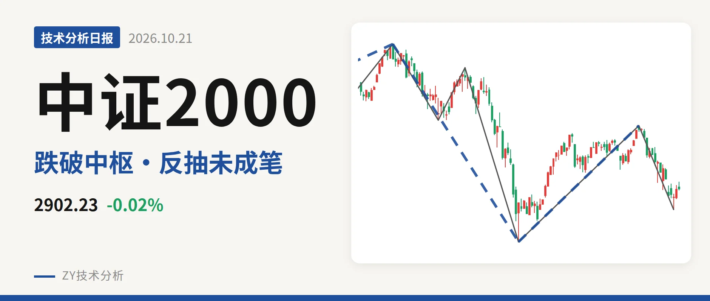
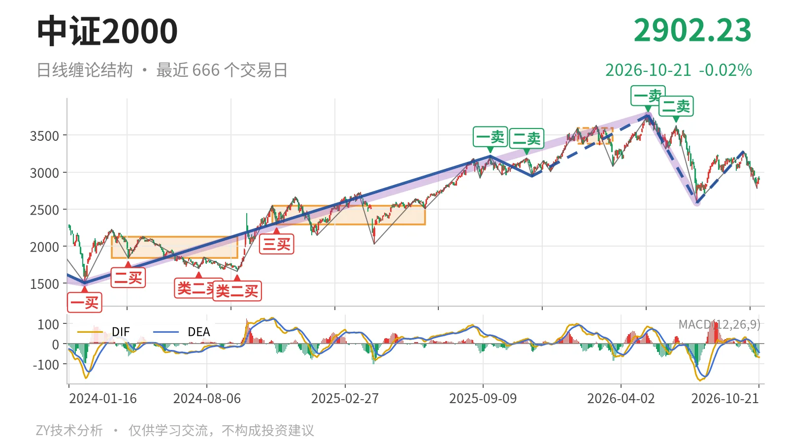
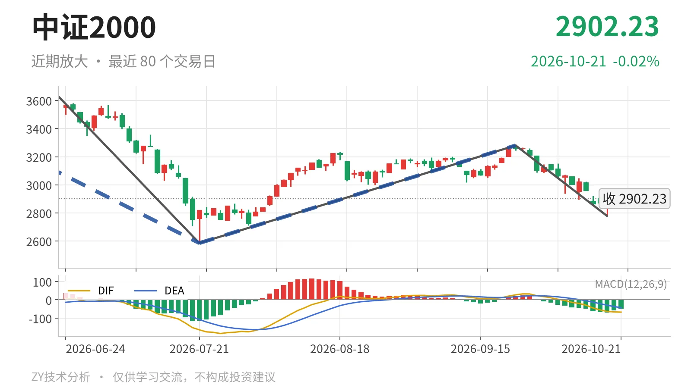

中证2000｜2902点落中枢下方，反抽看2945

最近日线中枢 3381.36—3593.19点，收盘位于中枢之下
一句话：5月14日以来下跌段未结束，2902点位于中枢下方
📉 走势结构：日线下跌段未改
当前日线结构仍处在5月14日以来的下跌段中，这一段还未结束。2024年2月6日至2026年5月14日上涨段从1503.44点走到3768.08点，此后5月14日至7月21日下跌段落到2585.35点。7月21日至9月22日只有一笔反弹至3280.29点，够不上新日线线段；9月22日后又回落到2778.80点，因此日线线段未切换为上涨。

📍 中枢与位置：收盘价低于下沿14.2%
最新收盘2902.23点，位于1月26日至3月23日形成的最近日线笔中枢3381.36—3593.19点下方，低于下沿14.2%。该中枢重心较前一轮明显抬高，但当前价格已经向下离开中枢，说明下跌段仍是主动方向。价格没有回到中枢内部，暂不按中枢扩展处理，而是向下离开段延续。
📌 买卖点：卖点后新低已成，类二买未破
5月14日一卖3768.08点、6月23日二卖3626.48点，后一个卖点更低。之后7月21日创出2585.35点新低，说明两个卖点后的离开段已经兑现。线段级别7月21日类二买2585.35点尚未被跌破，仍可视为当前下跌段的重要结构位置。2025年11月21日线段级别二三买在2944.56点。10月20日至21日反抽最高2944.81点，刚触到该位置但未站稳，压力看2945点附近。

⚖️ 背驰：2585点附近向下动能衰减
同向比较，6月23日至7月21日下跌笔绿柱面积810、DIF低点-164.2；9月22日至10月19日下跌笔绿柱面积415、DIF低点-63.7。后一笔低点2778.80点未破2585.35点，绿柱面积明显缩小，DIF低点大幅抬升，属于向下力度衰减。这使2585点一线有结构支撑，但仍不是日线转强。
🔎 关键位置观察：2945点和3381点定强弱
反抽若站不上2945点，结构上还是下跌段内偏弱整理；若重新站上3381点，5月14日以来的下跌更可能只是中枢扩展。若后续跌破2585点，7月21日类二买被破坏，下方结构重新打开。当前2902.23点位于2945点与2585点之间，未站上2945点，结构偏弱。
⚠️ 本文为基于公开行情数据的缠论技术结构记录，由程序自动计算并生成，仅供学习交流，不构成任何投资建议。市场有风险，投资需谨慎。